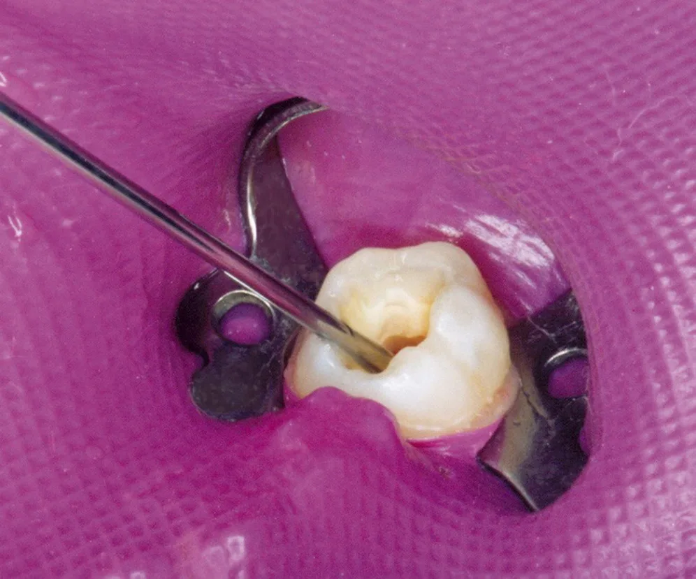
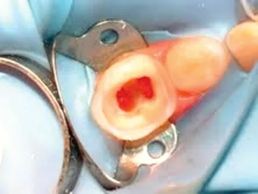

نسخه استخراجشده؛ ترجمه یا تأیید علمی انجام نشده است. وضعیت: captured
اندیکاسیون: اکسپوژر پالپ حین برداشتن پوسیدگی در دندان شیریای که پالپش سالم یا در حد التهاب برگشتپذیر است — بدون درد خودبهخودی و بدون یافتهی رادیوگرافیک.
۱. بیحسی و ایزوله کردن با رابردم.
۲. برداشتن کامل پوسیدگی و باز کردن سقف اتاقک.
۳. برداشتن کل پالپ تاجی تا مدخل کانالها.
۴. کنترل خونریزی با پنبهی مرطوب و فشار ملایم.
گام ۴ نقطهی تصمیم است. اگر خونریزی با فشار ملایم پنبهی مرطوب در کمتر از ۵ دقیقه بند بیاید، پالپ ریشهای سالم است و کار ادامه مییابد.
اگر بند نیاید، یعنی التهاب به پالپ ریشهای رسیده و باید به پالپکتومی — یا اگر شرایطش نیست، کشیدن — تغییر مسیر داد.

ماده روی مدخل کانالها گذاشته میشود تا سطح را سیل کند و بافت زیرین را حفظ.
MTA — بالاترین میزان موفقیت؛ زیستسازگار. عیبش هزینه و احتمال تیره شدن تاج است.
فریک سولفات — عملکرد نزدیک، در دسترستر و ارزانتر؛ انتخابی رایج.
فرموکرزول — سابقهی طولانی دارد ولی به دلیل نگرانیهای سمیت و سرطانزایی، کاربردش رو به کاهش است.
پس از گذاشتن ماده، دندان باید بلافاصله بازسازی نهایی شود؛ ترمیم موقت طولانی، نشت و شکست میسازد.

نوع سؤال: ساخت کلمه · 9 خانه
حروف منبع: ر · ف · ر · ک · ل · م · ز · و · و
نوع سؤال: ساخت کلمه · 6 خانه
حروف منبع: ه · ی · ر · ا · ش · ی